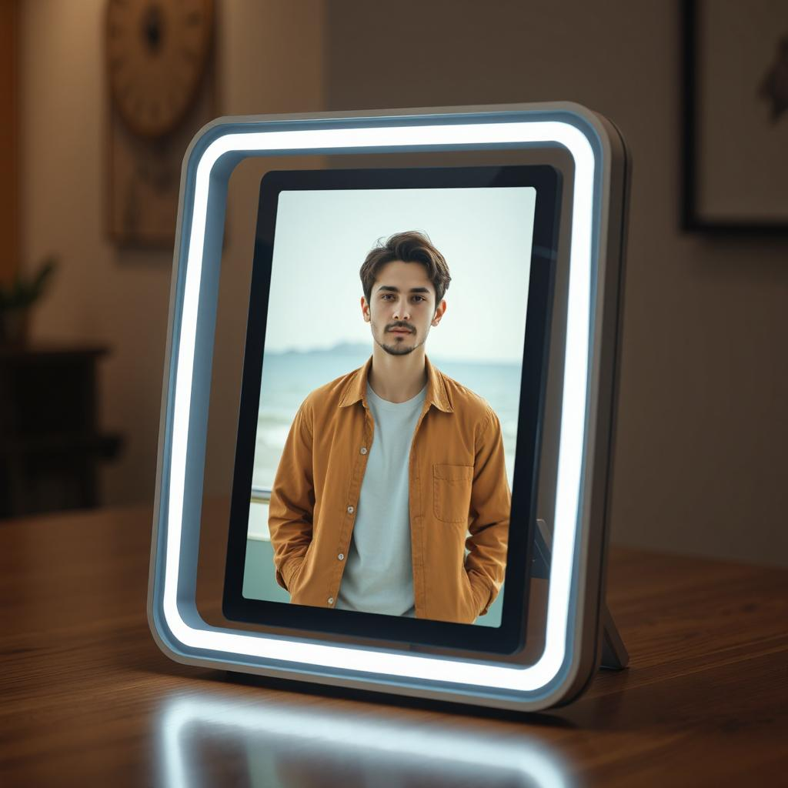

Почему нейрофоторамки?
Искусственный интеллект
Умная система анализа предпочтений и погодных условий
Подбор одежды
Точное сканирование тела для идеального подбора гардероба
Учет погоды
Адаптация рекомендаций под текущие погодные условия
Как это работает
Нейрофоторамки Texel - это инновационное решение, которое сочетает в себе технологии 3D-сканирования и искусственный интеллект. Наша система создает точную цифровую модель тела пользователя, анализирует погодные условия и предлагает оптимальные варианты одежды, учитывая индивидуальные предпочтения и стиль.
Подробнее о технологии

Ключевые события
12 февраля 2025
Знакомство с компанией-партнёром
Первая встреча с командой Texel и обсуждение перспектив сотрудничества
25 марта 2025
Посещение офиса в Технополисе
Знакомство с прототипом продукции и обсуждение технических деталей
15 апреля 2025
Интеграция технологий
Начало работы над объединением Virtual Try-On с погодными API